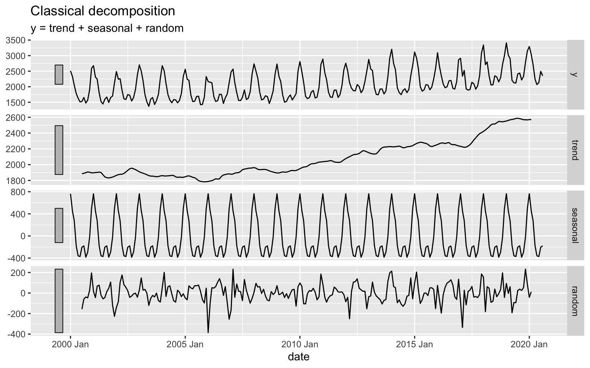
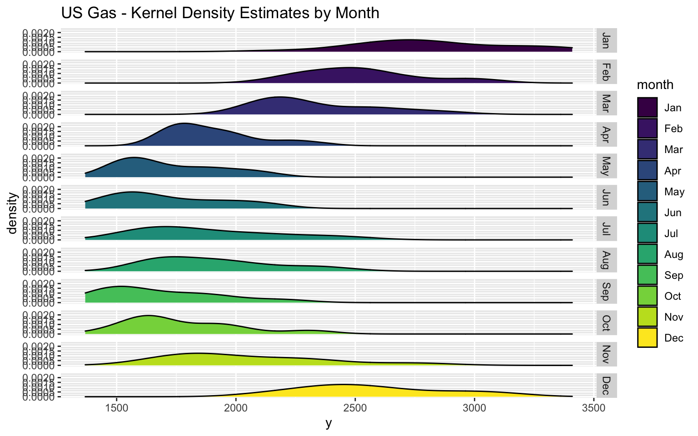
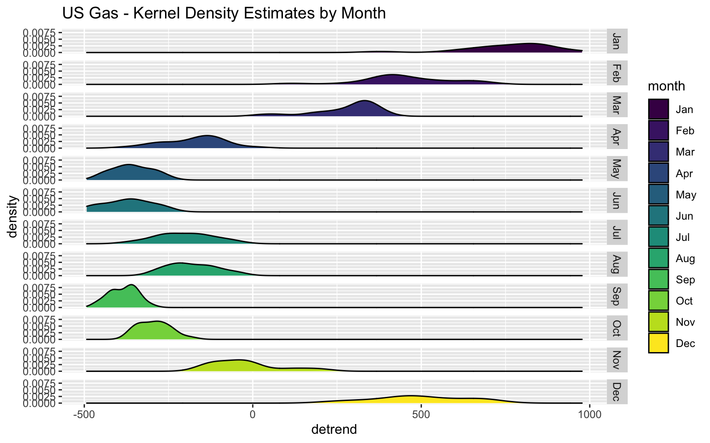
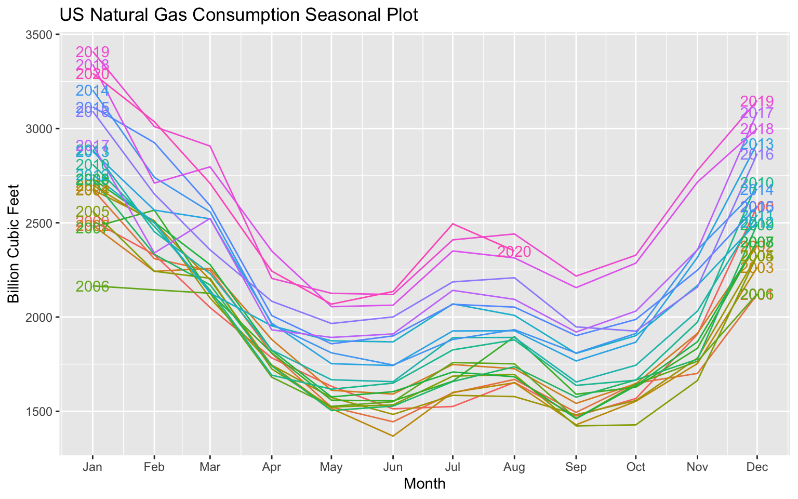
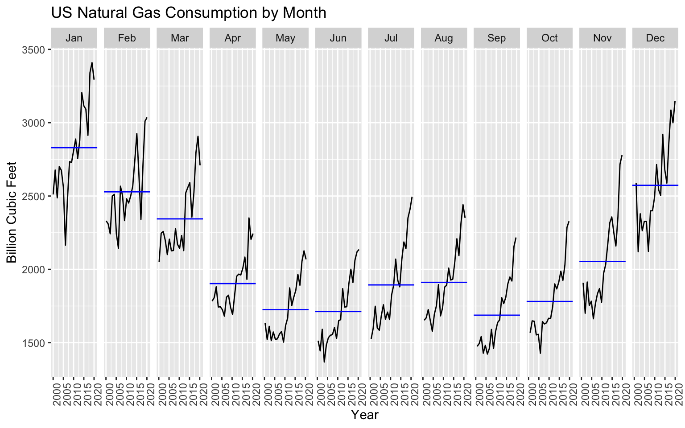

Time series seasonal analysis is one of the core foundations of time series analysis. Generally, a time series could either have a seasonal component or not. In addition, a series could have more than one seasonal pattern, for example:
In this section, we will focus on time series with a single seasonality pattern. In the following examples, we will use the US monthly consumption of natural gas.
One of the main tools for exploring seasonality is data visualization. Another simplistic but useful is summary statistics tables.
library(tsibble)
library(dplyr)
library(lubridate)
library(plotly)
library(ggplot2)
library(viridis)
library(fabletools)
library(feasts)First, let’s load the series and reformat it into tsibble object:
naturalgas_path <- paste(rprojroot::find_rstudio_root_file(), "data", "NATURALGAS.csv", sep = "/")
us_gas <- read.csv(naturalgas_path, stringsAsFactors = FALSE) %>%
setNames(c("date", "y")) %>%
mutate(date = yearmonth(as.Date(date))) %>%
as_tsibble(index = "date")
head(us_gas)## # A tsibble: 6 x 2 [1M]
## date y
## <mth> <dbl>
## 1 2000 Jan 2510.
## 2 2000 Feb 2331.
## 3 2000 Mar 2051.
## 4 2000 Apr 1783.
## 5 2000 May 1633.
## 6 2000 Jun 1513.Just by eyeballing the series plot, you can identify the strong seasonal pattern:
us_gas %>% plot_ly(x = ~ as.Date(date),
y = ~ y,
type = "scatter",
mode = "line",
name = "US Natural Gas") %>%
layout(title = "US Natural Gas Consumption (Not Seasonally Adjusted)",
yaxis = list(title = "Billion Cubic Feet"),
xaxis = list(title = paste("Source: U.S. Bureau of Transportation Statistics,", "<br>" ,
"Natural Gas Consumption [NATURALGAS]", sep = "")),
hovermode = "compare")We can leverage the classical_decomposition function to decompose the series to the trend, seasonal and irregular components:
us_gas %>%
model(classical_decomposition(y)) %>%
components() %>%
autoplot()
We will start with the summary statistics tables by calculating:
We will create time features with the year and month functions from the lubridate package that enables us to group by those features:
us_gas <- us_gas %>%
mutate(year = year(date),
month = month(date, label = TRUE))
head(us_gas)## # A tsibble: 6 x 4 [1M]
## date y year month
## <mth> <dbl> <dbl> <ord>
## 1 2000 Jan 2510. 2000 Jan
## 2 2000 Feb 2331. 2000 Feb
## 3 2000 Mar 2051. 2000 Mar
## 4 2000 Apr 1783. 2000 Apr
## 5 2000 May 1633. 2000 May
## 6 2000 Jun 1513. 2000 JunThe year average could provide us insights about change in the trend direction. This information can also be observed from the decompose function:
us_gas %>%
as.data.frame() %>%
group_by(year) %>%
summarise(avg = mean(y)) %>%
plot_ly(x = ~ year,
y = ~ avg,
type = "scatter",
mode = "line")If a series has a strong trend it may shadow some of the series seasonality. In this case, you can either use short part of the series or detrend the series.
The next summary is by the main frequency units - the month of the year:
us_gas %>%
as.data.frame() %>%
group_by(month) %>%
summarise(avg = mean(y))## # A tibble: 12 x 2
## month avg
## <ord> <dbl>
## 1 Jan 2829.
## 2 Feb 2529.
## 3 Mar 2344.
## 4 Apr 1903.
## 5 May 1725.
## 6 Jun 1713.
## 7 Jul 1894.
## 8 Aug 1911.
## 9 Sep 1688.
## 10 Oct 1781.
## 11 Nov 2054.
## 12 Dec 2573.A box plot is a useful method to visualize the distribution of the series observations by its frequency units:
us_gas %>%
plot_ly(x = ~month, y = ~ y,
type = "box",
color = ~month,
colors = "Dark2",
boxpoints = "all",
jitter = 0.3,
pointpos = -1.8)While we can see a clear seasonal pattern, the distribution of each month is fairly wide. This is mainly due to the year over year growth (or the series trend). We can reduce the growth impact by detrending the series and replot the seasonal box-plot. We will use the classical_decomposition and model functions from the feasts and fabletools packages, respectively:
us_gas_comp <- us_gas %>%
model(classical_decomposition(y)) %>%
components()
us_gas <- us_gas %>%
left_join(us_gas_comp %>% select(date, trend)) %>%
mutate(detrend = y - trend)Let’s replot the series monthly distribution, this time using the detrended series:
us_gas %>%
plot_ly(x = ~month, y = ~ detrend,
type = "box",
color = ~month,
colors = "Dark2",
boxpoints = "all",
jitter = 0.3,
pointpos = -1.8)After reducing the trend impact, the monthly distribution, as expected, is narrowing down, and we can see a clear seasonal pattern.
The seasonal plot splits the series by its seasonal cycle (year) and compares changes in each cycle (or from year to year). In the following example, we will create a seasonal plot with plotly:
p <- plot_ly()
years <- unique(us_gas$year)
colors <- viridis::viridis(n = length(years))
for(i in seq_along(years)){
y <- NULL
y <- us_gas %>%
as.data.frame() %>%
filter(year == years[i])
p <- p %>% add_lines(x = y$month,
y = y$y,
line = list(color = colors[i]),
name = years[i])
}
pNote: that we use a color scale to mark the years. This enables us to quickly observe the series’ growth from year to year and the seasonal pattern.
Similarly, we can split the series by its frequency units and plot each frequency unit against the frequency cycle (e.g., year):
p <- plot_ly()
for(i in unique(us_gas$month)){
m <- NULL
m <- us_gas %>%
as.data.frame() %>%
filter(month == i)
p <- p %>%
add_lines(x = m$year,
y = m$y,
name = i)
}
pHeatmap is another visualization tool for reviewing and identifying a seasonal pattern in a series:
us_gas_df <- us_gas %>%
as.data.frame() %>%
select(year, month, y) %>%
tidyr::pivot_wider(names_from = year,
values_from = y)
plot_ly(x = names(us_gas_df)[-1],
y = us_gas_df$month,
z = as.matrix(us_gas_df[, -1]),
colors = "Reds",
xgap = 3,
ygap = 3,
type = "heatmap")Likewise in the box-plot seasonal plot, we can use the kernel density plot to visualize the series frequency units distribution. A simple method is to use the ggplot2 package geom_density function:
ggplot(us_gas, aes(x = y)) +
geom_density(aes(fill = month)) +
ggtitle("US Gas - Kernel Density Estimates by Month") + facet_grid(rows = vars(as.factor(month)))
As before, the detrended series should have narrow distribution:
ggplot(us_gas, aes(x = detrend)) +
geom_density(aes(fill = month)) +
ggtitle("US Gas - Kernel Density Estimates by Month") + facet_grid(rows = vars(as.factor(month)))
The feasts package provides some built-in functions for seasonal plots of tsibble objects based on the ggplot2 package. The gg_season function creates a seasonal plot by the series frequency cycle units. By default, the function labels each line by its frequency cycle unit:
us_gas %>%
gg_season(y, labels = "both") +
ylab("Billion Cubic Feet") +
xlab("Month") +
ggtitle("US Natural Gas Consumption Seasonal Plot")
The gg_subseries split and plot each frequency unit aginst its frequency cycle unit:
us_gas %>%
gg_subseries(y) +
ylab("Billion Cubic Feet") +
xlab("Year") +
ggtitle("US Natural Gas Consumption by Month")
Create seasonal plots for the US Alcoholic Beverages Sales:
us_abs_path <- paste(rprojroot::find_rstudio_root_file(), "data", "Alcoholic Beverages Sales.csv", sep = "/")
us_abs <- read.csv(us_abs_path, stringsAsFactors = FALSE) %>%
setNames(c("date", "y")) %>%
mutate(index = yearmonth(as.Date(date))) %>%
select(-date) %>%
as_tsibble(index = index)